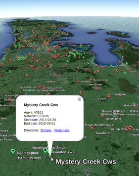

Choosing a clifro Station
Blake Seers
2021-07-11
Source:vignettes/choose-station.Rmd
choose-station.Rmd## Warning in system("timedatectl", intern = TRUE): running command 'timedatectl'
## had status 1Introduction
Choosing clifro stations is made easy with the single cf_find_station function. This function is all that is required to find clifro stations. This function is equivalent to conducting the same search on the find stations page when conducting a query online at CliFlo, except without some of the errors and bugs. This means that the searches and the types of searches possible are exactly the same however, clifro extends functionality to exploring the spatial nature of stations via KML files, or plotting directly in R. This is the main advantage in searching for stations using clifro as locating suitable stations on a map is generally the preferred search tool.
There are four possible types of searches:
- A search based on pattern matching the station name
- A search based on pattern matching the network ID
- A search based on region
- A search based on the vicinity of a given location
For each of these searches either all, open or closed stations may be returned and these searches also may only return stations where given datatypes are available. The primary goal in searching for stations is to find the unique station agent number required to create a cfStation object. This vignette details the various search options in clifro and ways to find these requisite agent numbers, primarily by way of example.
Ignoring datatypes
The following examples detail how to use the cf_find_station search function ignoring any datatypes.
Station name search
Both of these searches use pattern matching to find the appropriate stations. The station name search is useful for searching stations in certain towns or suburbs or maybe even streets and parks. The network ID is a number that is assigned to the stations which makes this search useful to look up stations where these are known.
These searches are used when part or all of the station name or network ID is known. For example, consider we are looking for open stations located in Takaka, at the southeastern end of Golden Bay at the northern end of the South Island, New Zealand. The default for the cf_find_station function is to search open station names matching the string.
At the time of writing this, CliFlo ignores the status argument in the name and network ID search whereas clifro does not. Searching open stations with the station name matching “takaka” on CliFlo will return these stations.
# Equivalent to searching for status = "open" on CliFro
# Note the search string is not case sensitive
cf_find_station("takaka", status = "all")## Warning in with_tz(Sys.time(), tzone): Unrecognized time zone ''
## Warning in with_tz(Sys.time(), tzone): Unrecognized time zone ''## name network agent start end open distance
## 1) Takaka, Kotinga Road F02882 3788 1970-08-01 2020-08-18 TRUE NA
## 2) Riwaka At Takaka Hill O12090 44046 1980-01-10 2020-08-18 TRUE NA
## 3) Takaka Pohara F02884 3790 1986-07-01 2020-08-18 TRUE NA
## 4) Takaka At Harwoods F15292 44050 1988-01-25 2020-08-18 TRUE NA
## 5) Takaka At Kotinga F15291 44051 1992-04-24 2020-08-18 TRUE NA
## 6) Takaka @ Canaan F0299A 44072 1994-02-01 2020-08-18 TRUE NA
## 7) Upper Takaka 2 F12083 11519 1995-07-12 2020-08-18 TRUE NA
## 8) Takaka Ews F02885 23849 2002-04-30 2020-08-18 TRUE NA
## 9) Takaka Aero Raws O00957 41196 2015-08-12 2020-08-18 TRUE NA
## 10) Takaka, Kotinga 2 F02883 3789 1985-11-30 2012-07-01 FALSE NA
## 11) Upper Takaka F12082 7316 1991-10-31 1992-10-31 FALSE NA
## 12) Takaka,Patons Rock F02772 3779 1969-10-01 1975-01-01 FALSE NA
## 13) Takaka,Kotinga 1 F02971 3794 1961-12-01 1971-08-01 FALSE NA
## 14) Takaka Aero F02871 3785 1936-11-01 1970-04-01 FALSE NA
## 15) Takaka Hill F12081 3833 1947-09-01 1959-11-01 FALSE NA
## 16) Takaka,Bu Bu F02872 3786 1933-04-01 1945-11-30 FALSE NA
## 17) Takaka F02881 3787 1904-01-01 1927-10-01 FALSE NA
## lat lon
## 1) -40.87200 172.8090
## 2) -41.03192 172.8444
## 3) -40.84500 172.8670
## 4) -41.03094 172.7980
## 5) -40.87068 172.8080
## 6) -40.93987 172.9082
## 7) -41.01516 172.8258
## 8) -40.86364 172.8057
## 9) -40.81531 172.7765
## 10) -40.88200 172.8010
## 11) -41.05100 172.8330
## 12) -40.78900 172.7570
## 13) -40.90000 172.7750
## 14) -40.81600 172.7720
## 15) -41.01700 172.8670
## 16) -40.85000 172.7330
## 17) -40.81700 172.8000This shows that 8 of these 17 stations are closed. The search in clifro does not ignore the station status.
cf_find_station("takaka", status = "open")## Warning in with_tz(Sys.time(), tzone): Unrecognized time zone ''
## Warning in with_tz(Sys.time(), tzone): Unrecognized time zone ''## name network agent start end open distance
## 1) Takaka, Kotinga Road F02882 3788 1970-08-01 2020-08-18 TRUE NA
## 2) Riwaka At Takaka Hill O12090 44046 1980-01-10 2020-08-18 TRUE NA
## 3) Takaka Pohara F02884 3790 1986-07-01 2020-08-18 TRUE NA
## 4) Takaka At Harwoods F15292 44050 1988-01-25 2020-08-18 TRUE NA
## 5) Takaka At Kotinga F15291 44051 1992-04-24 2020-08-18 TRUE NA
## 6) Takaka @ Canaan F0299A 44072 1994-02-01 2020-08-18 TRUE NA
## 7) Upper Takaka 2 F12083 11519 1995-07-12 2020-08-18 TRUE NA
## 8) Takaka Ews F02885 23849 2002-04-30 2020-08-18 TRUE NA
## 9) Takaka Aero Raws O00957 41196 2015-08-12 2020-08-18 TRUE NA
## lat lon
## 1) -40.87200 172.8090
## 2) -41.03192 172.8444
## 3) -40.84500 172.8670
## 4) -41.03094 172.7980
## 5) -40.87068 172.8080
## 6) -40.93987 172.9082
## 7) -41.01516 172.8258
## 8) -40.86364 172.8057
## 9) -40.81531 172.7765Stations are considered open in clifro if the final date returned from the search is within four weeks of the current date. This gives the user a better idea on the stations that are currently collecting data.
Station network ID search
The same can be done for searching stations using network ID although search = "network" needs to be added to the function call. Assume we knew that the only stations we were interested in were the open stations whose network ID’s match F028.
cf_find_station("f028", search = "network", status = "all")## Warning in with_tz(Sys.time(), tzone): Unrecognized time zone ''
## Warning in with_tz(Sys.time(), tzone): Unrecognized time zone ''## name network agent start end open
## 1) Takaka, Kotinga Road F02882 3788 1970-08-01 2020-08-18 TRUE
## 2) Takaka Pohara F02884 3790 1986-07-01 2020-08-18 TRUE
## 3) Takaka Ews F02885 23849 2002-04-30 2020-08-18 TRUE
## 4) Aorere At Salisbury Bridge F02854 44020 2011-07-26 2020-08-18 TRUE
## 5) Takaka, Kotinga 2 F02883 3789 1985-11-30 2012-07-01 FALSE
## 6) Nelson,Mckay Hut F02821 3780 1983-04-01 1993-08-16 FALSE
## 7) Gouland Downs F02831 3781 1984-10-31 1993-08-16 FALSE
## 8) Golden Bay,Table Hl I F02852 3783 1977-06-01 1991-11-23 FALSE
## 9) Golden Bay,Table Hl 2 F02853 3784 1977-06-01 1991-11-23 FALSE
## 10) Tarakohe F02891 3791 1932-05-01 1989-01-01 FALSE
## 11) Takaka Aero F02871 3785 1936-11-01 1970-04-01 FALSE
## 12) Totaranui F02892 3792 1957-01-01 1960-08-31 FALSE
## 13) Takaka,Bu Bu F02872 3786 1933-04-01 1945-11-30 FALSE
## 14) Takaka F02881 3787 1904-01-01 1927-10-01 FALSE
## 15) Quartz Ranges F02851 3782 1901-01-01 1902-08-31 FALSE
## distance lat lon
## 1) NA -40.87200 172.8090
## 2) NA -40.84500 172.8670
## 3) NA -40.86364 172.8057
## 4) NA -40.80236 172.5333
## 5) NA -40.88200 172.8010
## 6) NA -40.89000 172.2130
## 7) NA -40.89200 172.3510
## 8) NA -40.80700 172.5560
## 9) NA -40.80700 172.5560
## 10) NA -40.82500 172.8980
## 11) NA -40.81600 172.7720
## 12) NA -40.82300 173.0020
## 13) NA -40.85000 172.7330
## 14) NA -40.81700 172.8000
## 15) NA -40.86700 172.5170Notice that the resulting dataframes in all of these searches are first ordered by the date they last received data, and then by the date they opened, to return the longest-running open stations first and the most historic, closed stations last.
Return all stations within a region
This broad search returns all, open or closed stations within one of the 29 preselected New Zealand regions (note that stations can belong to more than one region). The search = "region" argument must be added to the cf_find_station function to conduct these searches. If the region is unknown then the search argument may be missing which brings up an interactive menu of the 29 regions for the user to select (cf_find_station(search = "region")), otherwise partial matching is used.
## Warning in with_tz(Sys.time(), tzone): Unrecognized time zone ''
## Warning in with_tz(Sys.time(), tzone): Unrecognized time zone ''
# Partial match for the Queenstown region
open.queenstown.stations = cf_find_station("queen", search = "region")Typing open.queenstown.stations into R will then return all the 264 open Queenstown stations. This is clearly a burden to choose stations based on a large list of numbers hence plotting them on a map (covered below) to assess their spatial extent will make this task much easier.
Return all stations within the vicinity of a given location
This location based search is conducted by including the search = "latlong" argument to the cf_find_station function. There are three parameters needed for this search; latitude, longitude and radius (kilometres). Just like any other function in R, if these arguments aren’t named then the order matters and should be written in the order specified above. The latitude and longitude must be given in decimal degrees.
We are (still) interested in finding all open stations around the small town of Takaka. From GeoHack we can see that the latitude is -40.85 and the longitude is 172.8. We are interested in all open stations within a 10km radius of the main township.
## Warning in with_tz(Sys.time(), tzone): Unrecognized time zone ''
## Warning in with_tz(Sys.time(), tzone): Unrecognized time zone ''
takaka.town.st = cf_find_station(lat = -40.85, long = 172.8, rad = 10, search = "latlong")
# Print the result, but remove the lat and lon columns to fit the page
takaka.town.st[, -c(8, 9)]## name network agent start end open distance
## 1 Takaka, Kotinga Road F02882 3788 1970-08-01 2020-08-31 TRUE 2.6
## 2 Takaka Pohara F02884 3790 1986-07-01 2020-08-31 TRUE 5.7
## 3 Anatoki At Happy Sams F15293 44015 1990-10-31 2020-08-31 TRUE 5.8
## 4 Takaka At Kotinga F15291 44051 1992-04-24 2020-08-31 TRUE 2.4
## 5 Takaka Ews F02885 23849 2002-04-30 2020-08-31 TRUE 1.6
## 6 Motupiko At Reillys Bridge F1529M 44041 2006-11-29 2020-08-31 TRUE 2.7
## 7 Takaka Aero Raws O00957 41196 2015-08-12 2020-08-31 TRUE 4.3
# We may rather order the stations by distance from the township
takaka.town.st[order(takaka.town.st$distance), -c(8, 9)]## name network agent start end open distance
## 5 Takaka Ews F02885 23849 2002-04-30 2020-08-31 TRUE 1.6
## 4 Takaka At Kotinga F15291 44051 1992-04-24 2020-08-31 TRUE 2.4
## 1 Takaka, Kotinga Road F02882 3788 1970-08-01 2020-08-31 TRUE 2.6
## 6 Motupiko At Reillys Bridge F1529M 44041 2006-11-29 2020-08-31 TRUE 2.7
## 7 Takaka Aero Raws O00957 41196 2015-08-12 2020-08-31 TRUE 4.3
## 2 Takaka Pohara F02884 3790 1986-07-01 2020-08-31 TRUE 5.7
## 3 Anatoki At Happy Sams F15293 44015 1990-10-31 2020-08-31 TRUE 5.8Searches based on datatypes
All the above searches did not include a datatype therefore they ignore the datatypes available at these stations. Imagine we are looking for hourly rain data at an open station in Takaka (using any of the aforementioned searches), we would need to include the hourly rain datatype in the search for it to return a suitable station.
Note
Unless the Reefton EWS station is the only CliFlo station of interest, the user will need a CliFlo account to get data from other stations.
# Create a clifro datatype for hourly rain
hourly.rain.dt = cf_datatype(3, 1, 2)
hourly.rain.dt## dt.name dt.type dt.options dt.combo
## dt1 Precipitation Rain (fixed periods) [Hourly]
# Conduct the search
cf_find_station("takaka", datatype = hourly.rain.dt)## name network agent start end open distance
## 1) Takaka Ews F02885 23849 2002-06-02 2020-08-16 TRUE NAThis tells us that the only open station in Takaka where hourly rain data is available is at the Takaka Ews station.
More than one search at a time
Since the cf_find_station function returns cfStation objects, any of these methods work on objects created from the cf_station function (see the working with clifro stations vignette for more details). We can conduct two or more searches at a time using the addition sign, just like we did for cfDatatypes (see the choose datatypes vignette).
We would like to return all open stations within a 10km radius of the Takaka township in the South Island, and the open stations in Kaitaia, in the North Island that collect hourly rain data.
## Warning in with_tz(Sys.time(), tzone): Unrecognized time zone ''
## Warning in with_tz(Sys.time(), tzone): Unrecognized time zone ''
## Warning in with_tz(Sys.time(), tzone): Unrecognized time zone ''
## Warning in with_tz(Sys.time(), tzone): Unrecognized time zone ''
my.composite.search = takaka.town.st + cf_find_station("kaitaia",
search = "region",
datatype = hourly.rain.dt)
my.composite.search## name network agent start end open
## 1) Takaka, Kotinga Road F02882 3788 1970-08-01 2020-08-31 TRUE
## 2) Takaka Pohara F02884 3790 1986-07-01 2020-08-31 TRUE
## 3) Anatoki At Happy Sams F15293 44015 1990-10-31 2020-08-31 TRUE
## 4) Takaka At Kotinga F15291 44051 1992-04-24 2020-08-31 TRUE
## 5) Takaka Ews F02885 23849 2002-04-30 2020-08-31 TRUE
## 6) Motupiko At Reillys Bridge F1529M 44041 2006-11-29 2020-08-31 TRUE
## 7) Takaka Aero Raws O00957 41196 2015-08-12 2020-08-31 TRUE
## 8) Kaitaia Aero Ews A53026 18183 2000-06-15 2020-08-30 TRUE
## 9) Trounson Cws A53762 37131 2009-06-04 2020-08-30 TRUE
## 10) Russell Cws A54212 41262 2016-04-05 2020-08-30 TRUE
## 11) Kaikohe Aws A53487 1134 1985-11-14 2020-08-29 TRUE
## 12) Purerua Aws A54101 1196 1995-01-01 2020-08-29 TRUE
## 13) Cape Reinga Aws A42462 1002 1995-01-01 2020-08-29 TRUE
## 14) Kerikeri Aerodrome Aws A53295 37258 2008-06-26 2020-08-29 TRUE
## 15) Kaitaia Ews A53127 17067 1998-12-17 2020-08-27 TRUE
## 16) Dargaville 2 Ews A53987 25119 2003-10-30 2020-08-22 TRUE
## 17) Kerikeri Ews A53191 1056 2002-06-28 2020-08-21 TRUE
## distance lat lon
## 1) 2.6 -40.87200 172.8090
## 2) 5.7 -40.84500 172.8670
## 3) 5.8 -40.88587 172.7498
## 4) 2.4 -40.87068 172.8080
## 5) 1.6 -40.86364 172.8057
## 6) 2.7 -40.85607 172.8316
## 7) 4.3 -40.81531 172.7765
## 8) NA -35.06770 173.2874
## 9) NA -35.72035 173.6515
## 10) NA -35.26835 174.1360
## 11) NA -35.41720 173.8229
## 12) NA -35.12900 174.0150
## 13) NA -34.42963 172.6819
## 14) NA -35.26200 173.9110
## 15) NA -35.13352 173.2629
## 16) NA -35.93145 173.8532
## 17) NA -35.18300 173.9260
# How long have these stations been open for?
transform(my.composite.search, ndays = round(end - start))[, c(1, 10)]## name ndays
## 1 Takaka, Kotinga Road 18293 days
## 2 Takaka Pohara 12480 days
## 3 Anatoki At Happy Sams 10897 days
## 4 Takaka At Kotinga 10356 days
## 5 Takaka Ews 6698 days
## 6 Motupiko At Reillys Bridge 5024 days
## 7 Takaka Aero Raws 1846 days
## 8 Kaitaia Aero Ews 7381 days
## 9 Trounson Cws 4105 days
## 10 Russell Cws 1608 days
## 11 Kaikohe Aws 12707 days
## 12 Purerua Aws 9372 days
## 13 Cape Reinga Aws 9372 days
## 14 Kerikeri Aerodrome Aws 4447 days
## 15 Kaitaia Ews 7924 days
## 16 Dargaville 2 Ews 6141 days
## 17 Kerikeri Ews 6629 daysSo where are these stations?
Up until now there probably hasn’t been any good reason to choose clifro to search for stations instead of the ‘Choose Stations’ form on CliFlo. However, the real advantage of using clifro is to visualise the station locations on a map by returning a KML file, particularly when there are lots of stations returned by the search. This Keyhole Markup Language (KML) is an XML-based language provided by Google(TM) for defining the graphic display of spatial data in applications such as Google Earth(TM) and Google Maps(TM).
To return the stations as a KML file simply use the cf_save_kml function on any cfStation object. The cf_find_station function returns cfStation objects therefore it’s very easy to plot these on a map. To assess the geographic extent of the Auckland stations we can return a KML file from the search and open it using our preferred KML-friendly software.
# First, search for the stations
all.auckland.st = cf_find_station("auckland", search = "region", status = "all")Now all.auckland.st contains the hundreds of Auckland stations where data have been recorded on CliFlo.
# Then save these as a KML
cf_save_kml(all.auckland.st, file_name = "all_auckland_stations")The green markers represent the open stations and the red markers indicate closed stations. The resulting KML file is saved to the current R session’s working directory by default. Have a look at the clifro station vignette for more methods and plotting of cfStation objects.

All Auckland Stations